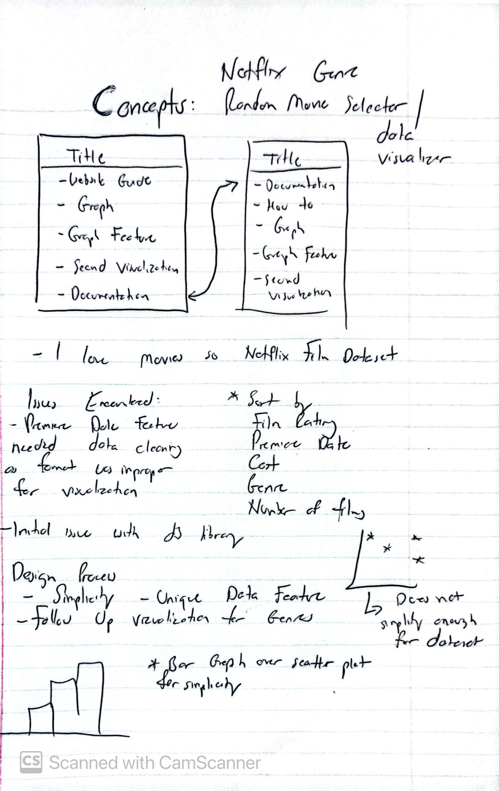

Research Question: What Netflix Genre has the Most films?
Design Process
The goal with this website was to create a data visualization around my love of movies that focused on simplicity and clarity. I wanted the visualizations to be easy to understand at a glance, which is why there are not too many convoluted design choices and elements. My initial idea and goal was to concentrate on an initial research question to build the rest of my visualization off of. I wanted to explore the relationship between the genre of a movie and its IMDB score. I wanted to see if there was a correlation between the genre of a movie and its IMDB score. I also wanted to see if there were any genres that were more popular than others in the Netflix Originals catalog.
Beginning Concepts: The initial sketches included a variety of visualization types such as:
- Bar charts to display genre counts.
- Scatter plots to explore relationships between release years and IMDB scores. The issue with Scatter plots, however, was that the dataset that I chose and the question that I wanted to answer wouldn't of been sufficient as the premiere dates feature within the dataset would've needed to be cleaned in order for me to visualize what I would've wanted to originally which was IMDB scores relative to their release dates.
- Box plots to represent the distribution of IMDB scores. This was sufficient as it displayed not only the top 5 genres but also acts as a follow up to the data that some people could pull from the initial set.
Moving forward, it was evident that Bar Charts were the best choice to match the simplicity of the dataset and answer the inital question. This minimalist and straightforward design choice avoided clutter and unnecessary complexity. This lead to the following visusalizations:
- A Top 5 Genres Bar Chart to provide a quick overview of the most common genres within Netflix.
- A Box Plot to dive deeper into the distribution of IMDB scores within those genres to act as a follow up to the initial question over genre.
Rationale
Simplicity and Consistency:
- Color Palette: I chose blue for bars and blue shades for box plots. This use of color prevents visual overload and keeps the focus on the data and acted as a strong contrast to the red website elements (of which are in reference to Netflix). The blue also acts as a form of visual consistency throughout as swapping to a different color after the fact would not be an example of good UX design.
- Interactivity: Hover effects and click events were designed to be apparent and simple. Hovering highlights bars in orange, and clicking displays a random film sample, just to display a small amount of interactivity.
Webpage Organization:
- The visualizations are arranged to guide the user from a broad overview (bar chart) to a detailed analysis (box plot). By having the interactive bar graph first, users can get drawn in and then go to the IMDB score distribution on the next page.
- Navigation between pages helps maintain simplicity, avoiding clutter on a single page. By breaking everything up, the data is much more accessible and easier to understand.
Webpage Layout:
- Whitespace and consistent margins ensure the charts are easy to read. This is another attempt at improving acessability
- Axes and titles are kept clear and concise to avoid overwhelming the user with details.
Data Insights
Here are the findings and insights from the Netflix Originals dataset:
- Genre Popularity: The bar chart shows that genres like Documentary,Drama,Comedy,Romantic Comedy, and Thrillerdominate the Netflix Originals catalog. Documentary films populate Netflix the most
- IMDB Score Trends: The box plot reveals that Documentaries tend to have consistently high scores, while Thriller has the highest variability.
- Random Film Sampling: Clicking on a genre to see a random film provides an engaging way to connect broad trends to a specific example.
These insights offer a richer understanding of Netflix Originals and highlight areas where Netflix excels or where there is variability in content quality. This could also speak to a temporal trend in which Documentary films are either the easiest to finance and the most likely to obtain the highest ratings, or that they are the most popular genre on Netflix. This visualization does its job by not answering its original question but also opening the door for more questions to be asked. 